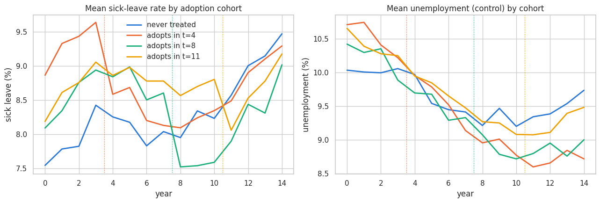
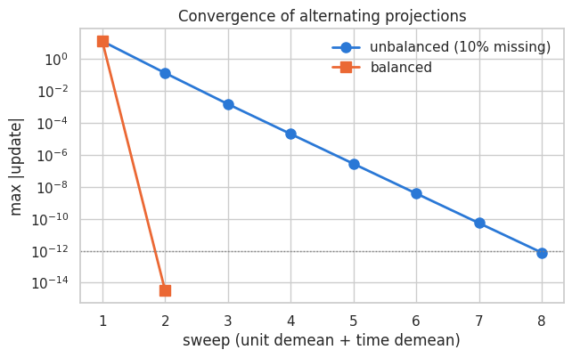
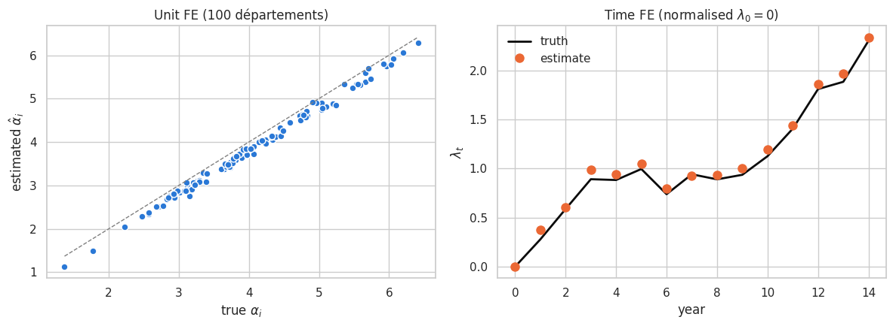
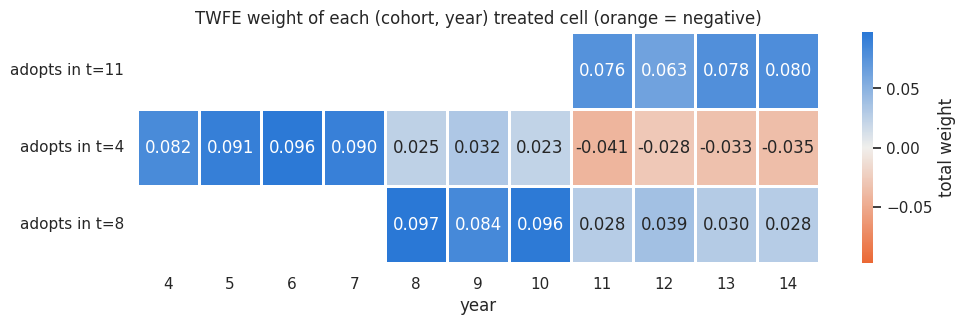
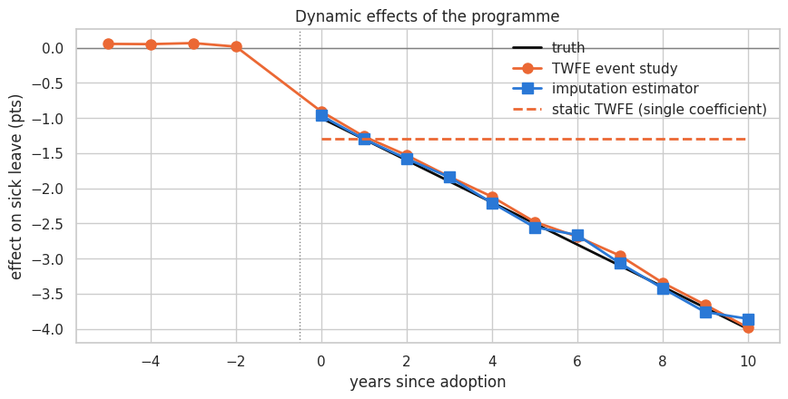

Two-way fixed effects with staggered policy adoption#
Goal: understand (1) how a model with two fixed effects is optimised and (2) how to interpret its coefficients, on a simulated policy evaluation.
Use case#
Départements adopt a sick-leave prevention programme in different years (staggered adoption).
\(y_{it}\): sick-leave rate of département \(i\) in year \(t\)
\(\alpha_i\): time-invariant département characteristics (age structure, industry mix…)
\(\lambda_t\): shocks common to all départements in year \(t\) (flu epidemics, national reforms…)
\(x_{it}\): control, unemployment rate (time-varying)
\(D_{it} = 1[t \ge G_i]\): treatment, the programme is in place (\(G_i\) = adoption year)
\(\tau_{it}\): treatment effect (negative = programme reduces sick leave)
Three cohorts adopt in years 4, 8 and 11; 25% of départements never adopt. Early adopters have higher baseline sick leave (selection on levels, absorbed by \(\alpha_i\)), and see unemployment fall faster (selection on trends through \(x\), handled by the control).
import os
import sys
path = os.getcwd()
while path != os.path.dirname(path):
if os.path.exists(os.path.join(path, "pyproject.toml")):
sys.path.insert(0, path)
break
path = os.path.dirname(path)
import matplotlib.pyplot as plt # noqa: E402
import numpy as np # noqa: E402
import pandas as pd # noqa: E402
import seaborn as sns # noqa: E402
from matplotlib.colors import LinearSegmentedColormap # noqa: E402
from pyfixest.estimation import feols # noqa: E402
from explore_dgp.dgps import StaggeredAdoptionDGP # noqa: E402
from explore_dgp.fixed_effects import ( # noqa: E402
demean_alternating_projections,
imputation_estimator,
recover_fixed_effects,
twfe_lsdv,
twfe_treatment_weights,
twfe_within,
)
sns.set_theme(style="whitegrid")
# Fixed categorical order: never-treated, then cohorts by adoption year
PALETTE = ["#2a78d6", "#eb6834", "#1baf7a", "#eda100"]
TRUTH, TWFE, ROBUST = "#0b0b0b", "#eb6834", "#2a78d6"
def cohort_label(g: float) -> str:
return "never treated" if np.isinf(g) else f"adopts in t={int(g)}"
1. Simulate the panel#
We drop 10% of observations at random: an unbalanced panel makes the optimisation non-trivial (see section 2). We start with a homogeneous effect \(\tau_{it} = \tau = -1\).
dgp = StaggeredAdoptionDGP(n_units=100, n_periods=15, missing_rate=0.1, seed=42)
df = dgp.generate(effect_type="homogeneous", tau=-1.0)
df["cohort_label"] = df["cohort"].map(cohort_label)
labels = [cohort_label(g) for g in sorted(df["cohort"].unique(), key=lambda g: (not np.isinf(g), g))]
colors = dict(zip(labels, PALETTE, strict=False))
print(df.shape)
df.head()
(1349, 11)
| unit | time | cohort | rel_time | treated | unemployment | sick_leave | true_unit_fe | true_time_fe | true_tau | cohort_label | |
|---|---|---|---|---|---|---|---|---|---|---|---|
| 0 | 0 | 1 | inf | NaN | 0 | 10.258529 | 7.977376 | 3.899774 | 0.277996 | -0.0 | never treated |
| 1 | 0 | 2 | inf | NaN | 0 | 10.844210 | 8.862148 | 3.899774 | 0.586711 | -0.0 | never treated |
| 2 | 0 | 3 | inf | NaN | 0 | 10.489096 | 8.810817 | 3.899774 | 0.890509 | -0.0 | never treated |
| 3 | 0 | 4 | inf | NaN | 0 | 10.736205 | 8.918088 | 3.899774 | 0.882360 | -0.0 | never treated |
| 4 | 0 | 5 | inf | NaN | 0 | 9.824772 | 9.006018 | 3.899774 | 0.994448 | -0.0 | never treated |
fig, axes = plt.subplots(1, 2, figsize=(13, 4.5))
means = df.groupby(["cohort_label", "time"])[["sick_leave", "unemployment"]].mean().reset_index()
for lab in labels:
m = means[means.cohort_label == lab]
axes[0].plot(m.time, m.sick_leave, color=colors[lab], lw=2, label=lab)
axes[1].plot(m.time, m.unemployment, color=colors[lab], lw=2, label=lab)
for g in dgp.cohorts:
for ax in axes:
ax.axvline(g - 0.5, color=colors[cohort_label(g)], ls=":", lw=1)
axes[0].set(title="Mean sick-leave rate by adoption cohort", xlabel="year", ylabel="sick leave (%)")
axes[1].set(title="Mean unemployment (control) by cohort", xlabel="year", ylabel="unemployment (%)")
axes[0].legend(frameon=False)
plt.tight_layout()
plt.show()

Cohorts differ in levels (unit FE) and share a common trend (time FE). Dotted lines mark adoption. Unemployment declines faster for early adopters: a time-varying confounder that the FE cannot absorb.
2. How is a two-way FE model optimised?#
2.1 Brute force: dummy variables (LSDV)#
Add one dummy per département and per year and run OLS. Exact, but the design matrix has \(N + T + K\) columns: impossible with millions of firms or workers (cf. AKM notebook).
2.2 Within transformation (Frisch-Waugh-Lovell)#
FWL theorem: \(\hat\beta\) from the full regression equals the OLS coefficient of \(\tilde y\) on \(\tilde X\), where \(\tilde v = M_{FE}\, v\) is the residual of \(v\) projected on the FE dummies.
One FE: \(\tilde v_{it} = v_{it} - \bar v_{i\cdot}\) (subtract the unit mean). Closed form.
Two FE, balanced panel: \(\tilde v_{it} = v_{it} - \bar v_{i\cdot} - \bar v_{\cdot t} + \bar v\). Closed form.
Two FE, unbalanced panel: no closed form. We use alternating projections (Gauss-Seidel): subtract unit means, then time means, repeat until nothing changes. Each step is a projection; their alternation converges to the projection on the sum of the two spaces (von Neumann / Halperin theorem).
This is exactly what fixest (R) and pyfixest (Python) do, with acceleration (Irons-Tuck) on top.
The cost per iteration is \(O(n)\) - no big matrix is ever built.
codes = [df["unit"].to_numpy(), df["time"].to_numpy()]
res_unbal = demean_alternating_projections(df["sick_leave"].to_numpy(), codes, tol=1e-12)
df_bal = dgp.__class__(n_units=100, n_periods=15, missing_rate=0.0, seed=42).generate()
res_bal = demean_alternating_projections(
df_bal["sick_leave"].to_numpy(), [df_bal["unit"].to_numpy(), df_bal["time"].to_numpy()], tol=1e-12
)
fig, ax = plt.subplots(figsize=(7, 4))
ax.semilogy(
range(1, res_unbal.n_iter + 1),
res_unbal.history,
"o-",
color=PALETTE[0],
lw=2,
ms=8,
label="unbalanced (10% missing)",
)
ax.semilogy(
range(1, res_bal.n_iter + 1),
np.maximum(res_bal.history, 1e-16),
"s-",
color=PALETTE[1],
lw=2,
ms=8,
label="balanced",
)
ax.axhline(1e-12, color="grey", ls=":", lw=1)
ax.set(
xlabel="sweep (unit demean + time demean)", ylabel="max |update|", title="Convergence of alternating projections"
)
ax.legend(frameon=False)
plt.show()
print(f"Sweeps until convergence: balanced = {res_bal.n_iter}, unbalanced = {res_unbal.n_iter}")

Sweeps until convergence: balanced = 2, unbalanced = 8
Balanced panel: the second sweep changes nothing (closed form). Unbalanced: linear convergence, whose speed depends on how “connected” units and periods are (with AKM’s sparse worker-firm graph it can need thousands of sweeps).
2.3 Three implementations, one answer#
regressors = ["treated", "unemployment"]
lsdv = twfe_lsdv(df, "sick_leave", regressors)
within = twfe_within(df, "sick_leave", regressors)
fit = feols("sick_leave ~ treated + unemployment | unit + time", data=df, vcov={"CRV1": "unit"})
comparison = pd.DataFrame({
"LSDV (dummies)": lsdv["coef"],
"Within (alt. projections)": within["coef"],
"pyfixest": fit.coef()[regressors],
"Truth": [dgp.params["tau"], dgp.params["beta_x"]],
})
print(comparison.round(6))
print(
f"\nLSDV: OLS with {lsdv['n_params']} columns | within: OLS with {len(regressors)} columns after {within['n_iter']} sweeps"
)
LSDV (dummies) Within (alt. projections) pyfixest Truth
treated -0.964942 -0.964942 -0.964942 -1.0
unemployment 0.413286 0.413286 0.413286 0.4
LSDV: OLS with 116 columns | within: OLS with 2 columns after 7 sweeps
fit.summary()
###
Estimation: OLS
Dep. var.: sick_leave, Fixed effects: unit+time
Inference: CRV1
Observations: 1349
| Coefficient | Estimate | Std. Error | t value | Pr(>|t|) | 2.5% | 97.5% |
|:--------------|-----------:|-------------:|----------:|-----------:|-------:|--------:|
| treated | -0.965 | 0.031 | -30.649 | 0.000 | -1.027 | -0.902 |
| unemployment | 0.413 | 0.016 | 26.106 | 0.000 | 0.382 | 0.445 |
---
RMSE: 0.29 R2: 0.953 R2 Within: 0.614
2.4 Recovering the fixed effects themselves#
Once \(\hat\beta\) is known, the FE solve \(r_{it} = y_{it} - x_{it}\hat\beta = \alpha_i + \lambda_t + e_{it}\),
again by alternating means. They are identified only up to a constant: \((\alpha_i + c,\ \lambda_t - c)\)
fits equally well. We normalise \(\lambda_0 = 0\) (as LSDV does by dropping the first year dummy);
pyfixest uses a different normalisation, so its levels differ by a constant.
A unit observed only once (a singleton) has its FE fitting the observation perfectly: it carries no
information on \(\beta\), and fixest drops it.
alpha_hat, lambda_hat = recover_fixed_effects(df, "sick_leave", regressors, within["coef"])
true_alpha = df.groupby("unit")["true_unit_fe"].first()
true_lambda = df.groupby("time")["true_time_fe"].first()
fig, axes = plt.subplots(1, 2, figsize=(12, 4.5))
axes[0].scatter(true_alpha, alpha_hat, s=40, color=PALETTE[0], edgecolor="white", linewidth=1)
lim = [true_alpha.min(), true_alpha.max()]
axes[0].plot(lim, lim, color="grey", ls="--", lw=1)
axes[0].set(xlabel=r"true $\alpha_i$", ylabel=r"estimated $\hat\alpha_i$", title="Unit FE (100 départements)")
axes[1].plot(true_lambda.index, true_lambda, color=TRUTH, lw=2, label="truth")
axes[1].plot(lambda_hat.index, lambda_hat, "o", color=PALETTE[1], ms=8, label="estimate")
axes[1].set(xlabel="year", ylabel=r"$\lambda_t$", title=r"Time FE (normalised $\lambda_0 = 0$)")
axes[1].legend(frameon=False)
plt.tight_layout()
plt.show()

The cloud of \(\hat\alpha_i\) is parallel to the diagonal but shifted: levels absorb any error in \(\hat\beta\,\bar x_i\) and in the normalisation. Compare FE differences across units, not levels. Time FE are precise (≈ 90 obs each), unit FE are noisier (≈ 13 obs each): in AKM-type settings with few observations per FE, this noise inflates \(\mathrm{Var}(\hat\alpha)\) (limited-mobility bias).
3. How to interpret the coefficients#
3.1 Which variation identifies \(\hat\beta\)?#
Only variation left after removing unit and year means: comparisons within a département over time, net of what happened to all départements that year. Anything constant per département (region, baseline health) or common to a year is absorbed - its effect is not estimable and cannot bias \(\hat\beta\).
\(\hat\beta_x = 0.40\) reads: “for a given département, a year where unemployment is 1 pt above its usual level (relative to the national evolution that year) has sick leave 0.40 pt higher”.
3.2 Why the control matters#
The FE absorb selection on levels but not on trends. Early adopters see unemployment fall faster, which lowers their sick leave independently of the programme. Without the control, this is credited to the policy.
fit_nox = feols("sick_leave ~ treated | unit + time", data=df, vcov={"CRV1": "unit"})
fit_pool = feols("sick_leave ~ treated + unemployment", data=df, vcov={"CRV1": "unit"})
fit_unit = feols("sick_leave ~ treated + unemployment | unit", data=df, vcov={"CRV1": "unit"})
specs = {
"Pooled OLS (no FE)": fit_pool,
"Unit FE only": fit_unit,
"Two-way FE, no control": fit_nox,
"Two-way FE + control": fit,
}
rows = [{"specification": k, "tau_hat": f.coef()["treated"], "se": f.se()["treated"]} for k, f in specs.items()]
print(pd.DataFrame(rows).round(3).to_string(index=False))
print(f"\ntrue tau = {dgp.params['tau']}")
specification tau_hat se
Pooled OLS (no FE) 0.613 0.098
Unit FE only -0.268 0.040
Two-way FE, no control -1.083 0.040
Two-way FE + control -0.965 0.031
true tau = -1.0
Pooled OLS compares high-sick-leave early adopters to others: level bias.
Unit FE only compares before/after, picking up the common upward trend in \(\lambda_t\).
TWFE without control is biased by the differential unemployment trend.
TWFE + control recovers \(\tau = -1\) - because the effect is homogeneous. Next section breaks this.
3.3 What \(\hat\tau\) averages: implicit weights#
By FWL, \(\hat\tau = \sum_{it} \tilde D_{it}\, y_{it} / \sum_{it} \tilde D_{it}^2\), with \(\tilde D\) the treatment residualised on both FE and the control. Plugging in the model gives (de Chaisemartin & D’Haultfœuille, 2020):
The weights sum to 1 but are not proportional to sample size, and can be negative.
df["weight"] = twfe_treatment_weights(df, controls=["unemployment"])
w_grid = df[df.treated == 1].groupby(["cohort_label", "time"])["weight"].sum().unstack()
div_cmap = LinearSegmentedColormap.from_list("div", ["#eb6834", "#f0efec", "#2a78d6"])
vmax = np.abs(w_grid.to_numpy()[~np.isnan(w_grid.to_numpy())]).max()
fig, ax = plt.subplots(figsize=(11, 3))
sns.heatmap(
w_grid,
cmap=div_cmap,
center=0,
vmin=-vmax,
vmax=vmax,
annot=True,
fmt=".3f",
linewidths=2,
linecolor="white",
ax=ax,
cbar_kws={"label": "total weight"},
)
ax.grid(False)
ax.set(title="TWFE weight of each (cohort, year) treated cell (orange = negative)", xlabel="year", ylabel="")
plt.show()
print(f"Sum of weights: {df.weight.sum():.3f} | sum of negative weights: {df.weight[df.weight < 0].sum():.3f}")

Sum of weights: 1.000 | sum of negative weights: -0.138
Late years of the earliest cohort get negative weight: there, TWFE implicitly uses this already-treated cohort as a control for later adopters (“forbidden comparisons”, Goodman-Bacon 2021). Harmless if \(\tau_{it}\) is constant - a weighted average of a constant is the constant. Dangerous otherwise.
4. Heterogeneous, dynamic effects: TWFE breaks#
Now the effect grows with exposure: \(\tau_{it} = -1 - 0.3\,(t - G_i)\). Early adopters have the largest effects… in exactly the cells that receive negative weights.
dgp_dyn = StaggeredAdoptionDGP(n_units=100, n_periods=15, missing_rate=0.1, seed=42)
df_dyn = dgp_dyn.generate(effect_type="dynamic", tau=-1.0, tau_slope=-0.3)
df_dyn["weight"] = twfe_treatment_weights(df_dyn, controls=["unemployment"])
fit_dyn = feols("sick_leave ~ treated + unemployment | unit + time", data=df_dyn, vcov={"CRV1": "unit"})
tau_twfe = fit_dyn.coef()["treated"]
true_att = df_dyn.loc[df_dyn.treated == 1, "true_tau"].mean()
weighted_truth = (df_dyn.weight * df_dyn.true_tau).sum()
tau_imp = imputation_estimator(df_dyn, controls=["unemployment"])
print(f"True ATT (mean of tau_it over treated cells): {true_att:.3f}")
print(f"TWFE estimate: {tau_twfe:.3f}")
print(f" = sum w_it * tau_it (weights decomposition): {weighted_truth:.3f}")
print(f"Imputation estimator (robust): {tau_imp.mean():.3f}")
True ATT (mean of tau_it over treated cells): -2.137
TWFE estimate: -1.289
= sum w_it * tau_it (weights decomposition): -1.324
Imputation estimator (robust): -2.111
TWFE is attenuated: it equals the weighted average of true effects predicted by the decomposition, not the ATT. The imputation estimator (Borusyak, Jaravel & Spiess 2024) fixes this using the same FE machinery:
fit \(y_{it} = \alpha_i + \lambda_t + \beta x_{it}\) on untreated cells only (never- and not-yet-treated);
predict the counterfactual \(\hat y_{it}(0)\) for treated cells;
\(\hat\tau_{it} = y_{it} - \hat y_{it}(0)\), then average as desired.
Treated cells never serve as controls, so no negative weights.
4.1 Event study#
Estimate one effect per year since adoption: TWFE with relative-time dummies (i(rel_time, ref=-1))
vs imputation averaged by event time. Leads (\(k<0\)) test pre-trends (should be ≈ 0).
# Bin leads beyond -6; never-treated units are put in the reference period (-1)
df_dyn["rel_time_bin"] = df_dyn["rel_time"].clip(lower=-6).fillna(-1).astype(int)
fit_es = feols("sick_leave ~ i(rel_time_bin, ref=-1) + unemployment | unit + time", data=df_dyn, vcov={"CRV1": "unit"})
es = fit_es.coef().drop("unemployment")
es.index = [int(name.split("[T.")[1].rstrip("]")) for name in es.index]
es = es.drop(index=[-6], errors="ignore").sort_index() # binned endpoint not shown
imp_by_k = tau_imp.groupby(df_dyn.loc[tau_imp.index, "rel_time"]).mean()
true_by_k = df_dyn[df_dyn.treated == 1].groupby("rel_time")["true_tau"].mean()
fig, ax = plt.subplots(figsize=(10, 4.5))
ax.axhline(0, color="grey", lw=1)
ax.axvline(-0.5, color="grey", ls=":", lw=1)
ax.plot(true_by_k.index, true_by_k, color=TRUTH, lw=2, label="truth")
ax.plot(es.index, es, "o-", color=TWFE, lw=2, ms=8, label="TWFE event study")
ax.plot(imp_by_k.index, imp_by_k, "s-", color=ROBUST, lw=2, ms=8, label="imputation estimator")
ax.hlines(tau_twfe, 0, true_by_k.index.max(), color=TWFE, ls="--", lw=2, label="static TWFE (single coefficient)")
ax.set(xlabel="years since adoption", ylabel="effect on sick leave (pts)", title="Dynamic effects of the programme")
ax.legend(frameon=False)
plt.show()

Here the dynamic TWFE event study works: effects depend only on event time, and each dummy isolates one event time. The failure is the static coefficient, which squeezes a growing effect into one number with bad weights. If effects also differed across cohorts at the same event time, the event-study dummies would be contaminated too (Sun & Abraham 2021), while imputation stays valid.
Take-aways#
Optimisation
Two-way FE = OLS with \(N+T\) dummies, but nobody builds them: FWL + demeaning gives the same \(\hat\beta\).
With two FE on an unbalanced panel, demeaning is iterative (alternating projections);
pyfixest/fixestaccelerate it. The FE levels are then recovered by the same iterations, up to a normalisation.
Interpretation
\(\hat\beta\) uses only within-unit, within-year variation. Unit FE absorb selection on levels; time FE absorb common shocks. Selection on trends needs controls (or is a violation of parallel trends).
FE levels are relative (normalisation-dependent) and noisy when each FE has few observations.
With staggered adoption, \(\hat\tau_{TWFE}\) is a weighted average of cell effects with possibly negative weights. Report it only if effects are plausibly homogeneous; otherwise use heterogeneity-robust estimators (imputation /
did2s, Callaway-Sant’Anna, Sun-Abraham) and inspect the event study.